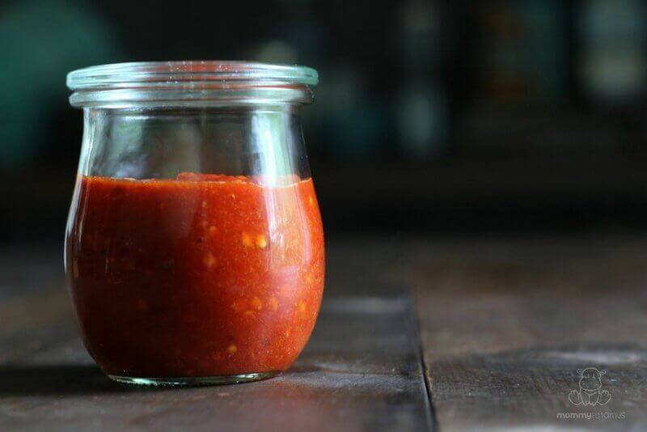

Chipotle Hot Sauce Suave
Our only sweet sauce, our Chipotle Hot Sauce is made from a rich blend of naturally smoked chipotle peppers. Its deep flavor enriches hearty dishes, and adds smoky notes and sweet heat to grilled meats.
Jalapeno Intermedia
The classic Jalapeño sauce, done the right way! Only the freshest peppers are used for this sauce. It’s the mildest of our sauces, but packs a rich flavor and gentle heat.
Green Habanero Hot Sauce On Fire
Our Green Habanero Hot Sauce is made with another of our classic recipes. The freshest green habanero peppers, garlic and fine spices blend into a fresh, flavorful sauce.